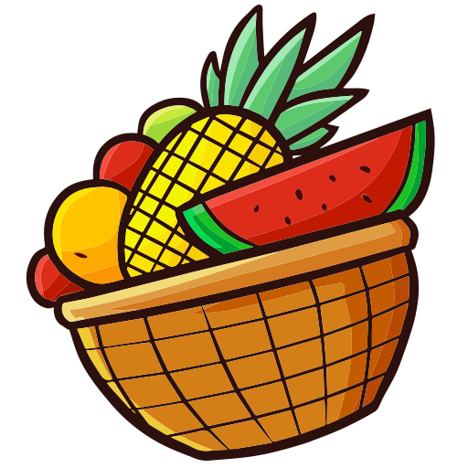
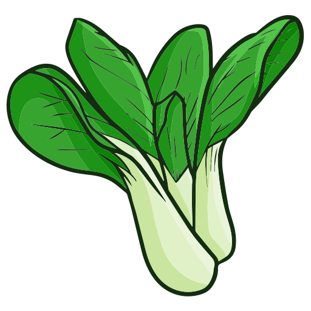
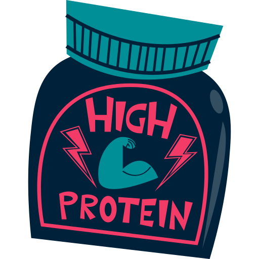
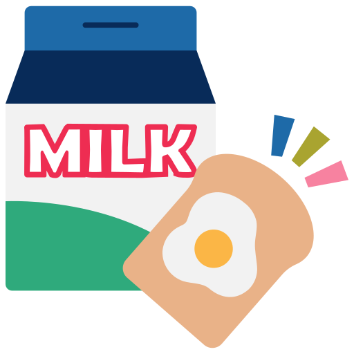

Everyting you eat and drink matters. Find your healthy eating style that reflects your preferences, culture, traditions and budget- and maintain it for a lifetime!. The right mix can help you be healthier now and into the future. The key is choosing a variety of foods and beverages from each food group - and making sure that each choice is limited in saturated fat, sodium, and added sugars. Start with small changes- "MyWins"- to make healthier choices you can enjoy.
| Food Group Amounts for 2,000 Calories a Day | ||||
|  |  |  |  | |
| 2 cups | 2 1/2 cups | 6 ounces | 5 1/2 ounces | 3 cups |
| Focus on whole fruits | Vary your veggies | Make half your grains whole grains | Vary your protein routine | Move to low-fat or fat-free milk or yogurt |
| Fruits | Vegetables | Grains | Proteins | Dairy |